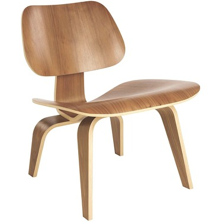
Eames Molded Plywood Lounge
Chair © Herman Miller
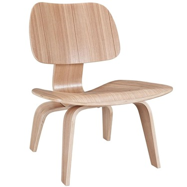
Modway Fathom
© Modway
I
Чарльз Имис однажды сказал: «Мы не занимаемся "искусством" — мы решаем проблемы».
Чтобы купить мебель в 1950 году, вам нужно было выбирать между между доступностью и долговечностью, между модой и прочностью. Чарльз и Рей разработали стул, который совмещал в себе всё вышеперечисленные и продавался за $ 20.95. Они назвали его LCW.
Стул LCW воплощает в себе всю страсть Чарльза Имиса к простоте материала и производства. «Мы хотим сделать лучшее для большинства за меньшее», говорили они. Дизайн оказался революционным: в 1999 журнал Time прозвал стул «лучшим дизайном века». Сегодня вы можете купить новый LCW от Herman Miller (официально лицензированный производитель продукции Eames) за $ 1,195.
С функциональной и эстетической точек зрения стулья идентичны.
Eames Molded Plywood Lounge
Chair © Herman Miller
На левом фото — оригинальный стул LCW 1946 года из коллекции MOMA, один из самых первых когда-либо созданных. Большинство людей назвали бы его оригинальным LCW.
Чарльз и Рей Имис продали права на производство их мебели компании Herman Miller в 1947 году. Коллекционеры назовут LCW, произведенные в 40-ых и 50-ых, «оригиналами». Но в каком-то смысле они, и подобные им версии производства Herman Miller, являются копиями этой модели из коллекции MOMA.
А на правом — стул Fathom от компании Modway. Это — чистая копия, так ещё и не залицензированная. Но при стоимости в $145 (эквивалентно $12.78 в 1947 году) данный стул является более доступным, нежели LCW, когда он был впервые произведён и продан. Даже по замыслу он оригинальнее, чем LCW: лучшее для большинства за меньшее.
Modway Fathom
© Modway
Я делюсь с вами этой историей, чтобы продемонстрировать удивительный факт: то, что делает что-то «оригиналом» (самое первое, лучшее, известное, правильное) или «копией» (идентичная копия, нелицензионная копия, интерпретация или ремикс) не всегда очевидно — или важно.
Я дизайнер. И как дизайнер, я чувствую необходимость быть оригинальным. Если вы дизайнер, или даже если вы просто интересуетесь дизайном, вы, возможно, также чувствуете необходимость быть оригинальным. Мы склонны почитать изобретателей и первооткрывателей, передовых и новаторских дизайнеров. И мы копируем их.
Этот оксюморон ремесла может свести человека с ума. Существует большая разница между оригинальностью и авторством, авторитетом и признанием, заимствованием и копированием. Я пишу эту очень короткую книгу, чтобы исследовать данную разницу.
Некоторые люди бывают очень недовольны фактом копирования, отказываются принять его или борются с ним изо всех сил. Другие люди используют копирования в их пользу, неважно, улучшить себя, построить комьюнити или же подорвать чей-то авторитет.
Я смог построить карьеру в дизайне, потому что я копировал.
Я надеюсь, что к тому времени, когда вы закончите читать, вы поймёте, насколько важно копировать. Правильно ли это или неправильно, копируй: так работает дизайн.
II
Стив Джобс копировал. «Великие художники воруют», — говорил он, цитирую Пабло Пикассо (или это был Стравинский? Томас Элиот?). Джобс и Apple копировали множество дизайнов в свои ранние годы, в особенности у исследовательской лаборатории Xerox в Пало Альто. История была следующей:
В начале 20 века Xerox был первопроходцем в офисной технике. В середине века компьютеры становились меньше и более доступными, и Xerox знали, что они должны усердно работать для удержания их доминирующей позиции на рынке. В 1970 был основан Xerox Palo Alto Research Center, или Xerox PARC, чтобы исследователь будущее «безбумажного офиса».
В течение 2 лет, Xerox PARC разработали революционный компьютер под названием Alto. Одной из инноваций являлся графический пользовательский интерфейс: программы и файлы отображались в виртуальных окнах, в которых пользователь перемещался с помощью мыши. Это была пугающе точная картина того, как будут выглядеть персональные компьютеры 30 лет спустя.
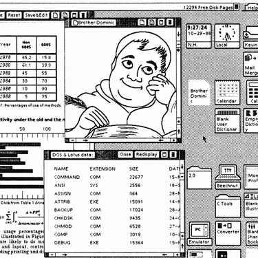
Xerox Star Operating System
© Xerox
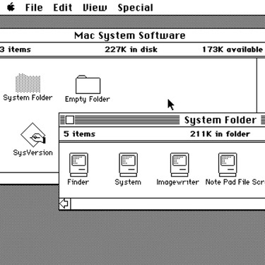
Apple Macintosh Operating System
© Apple
Джеф Раскин, лидер проекта по разработке Macintosh в Apple, увидел работы Xerox. Он хотел, чтобы Стив Джобс лично посмотрел на них, и назначил встречу.
«Я думал, что это лучшее, что я когда-либо видел в жизни», сказал Джобс об интерфейса Alto. «Спустя 10 минут мне стало понятно, что когда-нибудь все компьютеры будут работать именно так».
Когда в 1984 был выпущен Macintosh, он имел графический пользовательский интерфейс. Программы и файлы отображались в виртуальных окнах, в которых пользователь перемещался с помощью мыши
Точно так же, как и в Alto.
Xerox Star Operating System
© Xerox
Apple Macintosh Operating System
© Apple
Стив Джобс не любил, когда его копировали.
В 1985, годом позже выхода Macintosh на рынок, Apple подал в суд на компанию Digital Research Interactive за копирование пользовательского интерфейса Macintosh. Digital Research урегулировала спор во внесудебном порядке и изменила внешний вид их иконок, окон и курсора.
В 1990 году Apple подала в суд на Microsoft и Hewlett-Packard. Ситуация повторилась: дизайн новых продуктов компаний, Windows от Microsoft и NewWave от HP, по утверждению Apple, был копией операционной системой Macintosh. Но ранние лицензионные соглашения между Apple и Мicrosoft не позволяли выявить какие-либо нарушения: дело было прекращено.
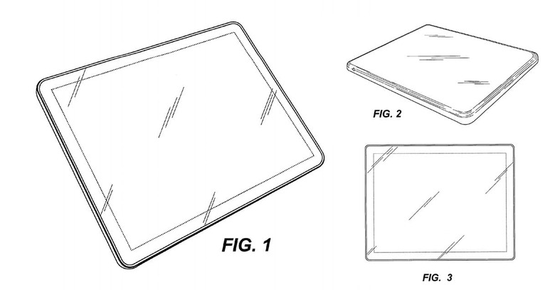
Патент Apple на устройство с закругленными углами
В разгар дела Apple против Microsoft, Xerox подали в суд на первых, надеясь отстоять свои права как изобретатель компьютерного интерфейса. Суд так же прекратил дело и спросил, почему компания так долго думала, чтобы поднять эту проблему. Билл Гейтс позже прокомментировал эту ситуацию: «у нас обоих был богатый сосед по имени Xerox … Я вломился к ним в дом, чтобы украсть телевизор и обнаружил, что Стив уже его украл».
Безудержное копирование, поспособствовавшее взрывному росту продаж компьютеров, привело к тому, что в 1990 пользовательский интерфейс был везде: было невозможно проверить кто создал какую-либо его часть, или кто скопировал кого. Стремление заявлять о себе почти поглотило Apple. Но когда они вышли из этой ситуации, то узнали много нового. Сегодня Apple владеет более чем 2,300 патентами на дизайн.
Патент Apple на устройство с закругленными углами
История закончилась в 2011 году, когда Apple подала в суд на Samsung за копирование дизайна их продуктов. Одним из самых удивительных утверждений было следующее: Samsung нарушила закон, когда начала продавать «прямоугольные продукты, которые имели 4 равномерно скруглённых угла».
Суд отклонил иск Apple на владение скруглёнными прямоугольниками. Но он поддержал другие, оштрафовав Samsung на 539 миллионов долларов за нарушение патентных прав.
Дизайнеры копируют. Мы воруем как великие художники. Но когда мы видим копию нашей работы, то приходим в ярость. Джобс говорил об Android от Google так: «Если понадобиться, я потрачу свой последний вздох, я потрачу каждого пенни из 40 миллиардов долларов Apple, чтобы исправить эту ошибку. Я собираюсь уничтожить Android, потому что это краденный продукт».
Стиву Джобсу не было равных в его дальновидном стремлении к инновациям. Но он так и не смирился с неизбежностью копирования.
III
Джон Кармак имел иное отношение к копированию. Для него копирование было способом учиться, вызовом, который нужно преодолеть, и источником новых идей.
Джон был и остаётся выдающимся программистом. Он наиболее известен разработкой жестоких и насыщенных экшеном шутеров от первого лица Doom и Quake. Эти игры расширили границы персональных компьютеров и определили жанр. Однако его первая революционная играя была простой, милой и причудливой. Она называлась Commander Keen.
Когда я рос в начале 90-х, я очень любил Commander Keen. Это забавная приключенческая игра; ты играешь за 8-летнего мальчика, который носит регбийный шлем и красные конверсы, и который попадает на планету к пришельцам и попутно собирает конфеты и убивает монстров из плазма-гана.
Commander Keen начала свою жизни как копия другой знаменитой игры: Super Mario Bros. 3.
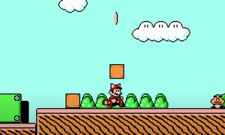
Super Mario Bros. 3
© Nintendo
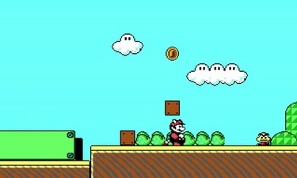
Нелицензионная версия Super
Mario Bros. 3 для ПК от Джона
Кармака
До игры Commander Keen, Кармак работал над разработкой программного обеспечения по подписке под названием Softdisk. Джон и другие програмисты из Softdisk выпускали подобные игры с огромной скоростью: сейчас же разработка игры-блокбастера может занять от 5 лет; Softdisk выпускала уникальную и полную игру каждый месяц.
В сентябре 1990-го года Джон решил, что для его следующей игры он попытается решить новую сложную задачу: скроллинг. В то время только такие консоли, как Nintendo, имели достаточно компьютерной мощности, чтобы гладко прокручивать пейзажи, героев и противников. Персональные компьютеры имели возможность запускать лишь простые одноэкранные игры. Но если Кармак собирался продавать игры на миллионы, как это делало Nintendo со своим Super Mario Bros., ему было необходимо понять как воссоздать данный эффект скролла.
Итак, 19 сентября 1990 года Кармак и разработчик по имени Том Холл решили воссоздать первый уровень из Super Mario Bros. 3. Всю следующую ночь Кармак заставлял свой компьютер скроллить и анимировать сцены из Super Mario, а Холл в это же время прыгал между телевизором и компьютером, ставя игру на паузу и попиксельно воссоздавая игру.
Super Mario Bros. 3
© Nintendo
Нелицензионная версия Super
Mario Bros. 3 для ПК от Джона
Кармака
На следующий день их коллеги были в шоке. Никто ещё не видел компьютерной игры, подобной этой. Джон Ромеро, близкий коллега Джона и будущий соавтор Doom и Quake, назвал это «самой ах***ной вещью на планете». Он настаивал, чтобы они завершили разработку и создали полную копию игры. Они планировали отослать её Nintendo.
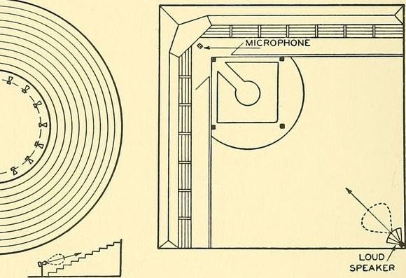
Изображение петли обратной связи
из архива Creative Commons Flickr
Движения за бесплатный и открытый исходный код ПО были повторены другой революцией в способах лицензирования творческих работ. В 2001 году Лоуренс Лессиг, Хэл Абельсон и Эрик Элдред основали Creative Commons — некоммерческую международную сеть, призванную содействовать обмену и повторному использованию «творчества и знаний путем предоставления бесплатных юридических инструментов».
Спустя почти 20 лет почти полмиллиона изображений на Flickr имеет лицензии Creative Commons (или CC). Википедия использует лицензии CC для всех своих фотографий и произведений искусства. Массачусетский технологический институт предоставляет более 2,400 курсов онлайн бесплатно по лицензиям Creative Commons. Бесчисленные миллионы творческих работ получили свои бенефиты от подхода создавать свои работы с исходным кодом и разрешением на них.
Изображение петли обратной связи
из архива Creative Commons Flickr
Десять лет назад движение с открытым исходным кодом пришло в дизайн. Майкл Чо создал Unsplash в 2013 году, чтобы поделиться несколькими фотографиями, которые, по его мнению, могли бы пригодиться дизайнерам в стартапах; по состоянию на сентябрь 2020 года на Unsplash размещено 2,147,579 фотографий, а общее количество загрузок фотографий превысило 2 миллиарда. Пабло Стэнли недавно выпустил Humaaans, коллекцию дизайнов с лицензией Creative Commons, которые могут быть повторно собраны в редакторе. Feather icons, Heroicons и Bootstrap Icons — всё это коллекции иконок с открытым исходным кодом и бесплатным использованием, которые дизайнеры применяют для создания веб-сайтов и приложений.
В то же время бурный рост числа дизайнерских ресурсов с открытым исходным кодом подкрепляется появлением нового класса инструментов для совместного использования и сотрудничества в области дизайна. Abstract — это система контроля версий дизайн-макетов, которая обещает «сотрудничество без хаоса». С помощью Abstract многие дизайнеры могут вносить свой вклад в один файл, не беспокоясь о том, что изменения друг друга будут перезаписаны, или о том, что нужно будет постоянно загружать последние версии. Figma тоже только что запустила функцию сообщества, позволяющую дизайнерам публиковать файлы и загружать проекты друг друга. Нетрудно представить, как в ближайшем будущем это превратится в дизайнерскую версию GitHub. Другие инструменты для дизайна последовали этому примеру: и Sketch, и Framer запустили библиотеки контента сообщества, заложив основу для распределенного контроля исходных текстов.
Копирование имеет фундаментальное значение для дизайна, как и для программного обеспечения. С появлением разрешительных лицензий и инструментов контроля версий кажется, что копирование — это новая идея, инновационный подход в индустрии, которая процветает за счет новизны. Но на самом деле копирование использовалось в искусстве и промышленности на протяжении тысячелетий.
V
В Китае существует множество концепций копирования, каждый из которых имеет свой подтекст. Фанчжипин (кит. 仿製品) — это копия, которая очевидно отличается от оригинала. Примером такого копирование является маленькая сувенирная модель статуи. Фужипин (кит. 複製品) — это точная репродукция оригинала в его натуральную величину. Фужипин так же функционал, как и оригинал, и не воспринимается, как фальшивка.
В 1974 году местные фермеры из региона в Китае под названием Сиань раскопали скульптуры солдат в натуральную величину из терракотовой глины. Когда китайские археологи приехали, чтобы исследовать находку, в течение времени они откапывали фигуру за фигурой, включая лошадей и кареты, каждая из которых была удивительно-детально сделана. Всего было откопано 8,000 терракотовых солдат. Они были датированы 210 годом до нашей эры.
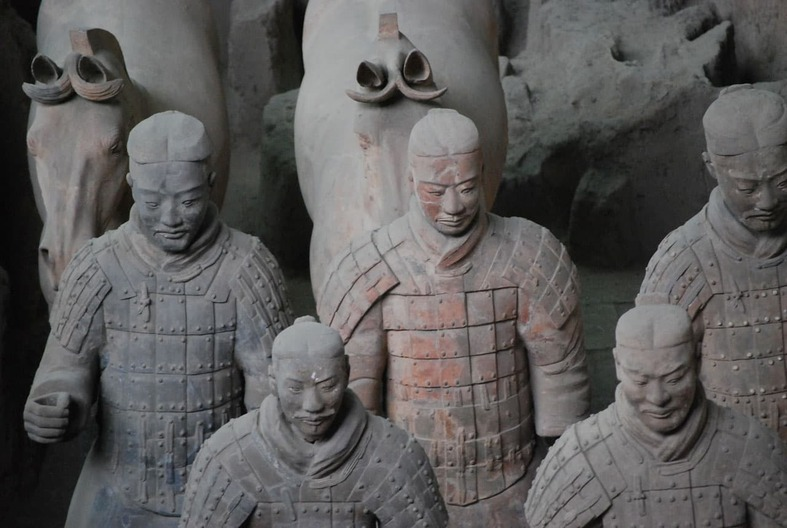
Терракотовые солдаты, город Сиань
Терракотовые солдаты моментально стали культурным достоянием. На месте раскопок был построен музей, но многие статуи также выставлялись на передвижных выставках. Сотни тысяч посетителей музеев по всему миру выстраивались в галереи, чтобы увидеть воинов.
Затем, в 2007 году, Гамбургский этнографический музей (Германия) потрясло открытие: некоторые из их выставленных терракотовых воинов оказались неоригинальными. Это были копии.
Директор музея стал изгоем: «Мы пришли к выводу, что у нас нет другого выхода, кроме как полностью закрыть выставку, чтобы сохранить хорошую репутацию музея». Музей вернул посетителям деньги. Это событие вызвало бурю геополитических обвинений: немецкие чиновники заявляли, что их обманули; китайские чиновники потирали руки, поскольку они никогда не утверждали, что статуи являются оригиналами.
Статуи в гамбургском музее были Фанчжипин, точными копиями. Они были один в один как оригиналы. В конце концов, и оригиналы сами стали продуктом массового производства, изготовленным из модулей и компонентов, отлитых из форм. Почти сразу после обнаружения терракотовых воинов китайские производители начали изготавливать их копии, продолжая дело, начатое более 2,000 лет назад.
Легко счесть такой подход к копированию культурным курьезом, отклонением, характерным только для Китая. Но копирование было не менее важно и для западных художников.
Японское искусство было одним из главных источников вдохновения для Винсента Ван Гога, одного из самых влиятельных европейских художников XIX века, если не всех времен. Ван Гог был очарован гравюрами по дереву таких художников, как Хиросигэ: стилизованные и яркие, они запечатлевали драматические моменты в захватывающих историях.
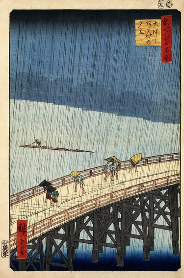
Ливень над мостом Охаси,
местность Атакэ (1857 г.), Утагава
Хиросигэ
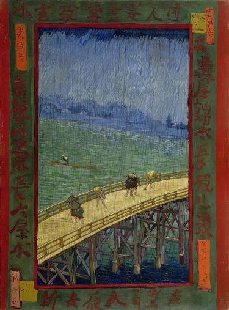
Мост под дождем (по мотивам
Хиросигэ) (1887), Винсент Ван Гог
Интерес Ван Гога выходил за рамки вдохновения. Чтобы изучить технику, освоенную японскими художниками, он копировал гравюры Кэйсая Эйсена и Утагавы Хиросигэ. Он пытался повторить их смелые линии, энергичные композиции и сильные цвета. Для своей копии «Куртизанки» Эйзена Ван Гог начал с обведения контура фигуры куртизанки прямо с майского выпуска «Paris Illustré» за 1886 год. Для «Цветущего сливового дерева» и «Моста под дождем» — копий гравюр Хиросигэ — он добавил рамки с японской каллиграфией, которые видел на других гравюрах.
Ливень над мостом Охаси,
местность Атакэ (1857 г.), Утагава
Хиросигэ
Мост под дождем (по мотивам
Хиросигэ) (1887), Винсент Ван Гог
Знакомство с японским стилем стало решающим прорывом. Ван Гог начал смягчать пейзажи. Он очерчивал свои объекты жирными черными мазками. Он рисовал водораздельными красками. Его интерпретация реальности зажгла мир искусства, оказывая влияние на художников и дизайнеров и по сей день.
Благодаря прямому копированию японских художников работы Ван Гога стали такими, какими мы их знаем сегодня.
Он ясно осознавал это влияние. В письме к своему брату Тео он писал: «Все мои работы в той или иной степени основаны на японском искусстве».
В китайском языке есть еще одно слово, обозначающее копию: Шаньчжай (山寨). На русский язык оно переводится как «подделка», но, как и в случае с большинством китайских слов, перевод не совсем удачен. Шаньчжай буквально означает «горная крепость»; это слово — неологизм, недавнее изобретение, вдохновленное известным романом, в котором главные герои прячутся в горной крепости, чтобы бороться с коррумпированным режимом. Продукты шаньчжай забавляют, привлекая внимание к тому факту, что они не оригинальны, выставляя на показ креативность их создателей.
Взять хотя бы популярный роман «Гарри Поттер и фарфоровая кукла»: в нем Гарри отправляется в Китай, чтобы остановить Волан-де-Морта и его китайского двойника. Он не претендует на оригинальность. Он играет на своей фальшивости: Гарри свободно говорит по-китайски, но ему трудно есть палочками.
Легко думать, что шаньчжай — это китайская причуда, но такие вещи существуют и в западной культуре. В частности, в дизайнерском сообществе можно наблюдать подобное явление: непрошенный редизайн.
Непрошеный редизайн демонстрирует идеи дизайнера о том, как можно улучшить известный сайт или приложение. Они варьируются от эстетических доработок для одного экрана до глубоких исследований в области UX, IA и контент-дизайна.
Непрошеные редизайны копируют визуальные элементы оригинала в качестве отправной точки, а затем преобразуют элементы, чтобы создать нечто новое. Как Ван Гог по следам Эйсена, дизайнеры могут перенять новые техники и подходы, просто копируя. Но когда дизайнер переосмысляет оригинал, он может создать нечто новое и вдохновляющее.
У дизайнерского сообщества сложные отношения с непрошенными редизайнами. С одной стороны, они являются главной опорой для талантливых молодых дизайнеров, желающих продемонстрировать свою способность критически мыслить о дизайне и применять свои навыки. Компании используют непрошенный редизайн для позиционирования себя как лидера: в 2003 году компания 37signals (создатель популярного инструмента управления проектами Basecamp) создала редизайн для PayPal, Google и FedEx, получив одобрение критиков: их редизайн онлайновой панели приборов для автомобилей «может сделать для автомобилей то, что TiVo сделал для телевидения», — заявил Джейсон Коттке.
Старая вывеска AirTrain
в аэропорту Кеннеди
Начало редизайна, копирование
непосредственно с существующей
вывески
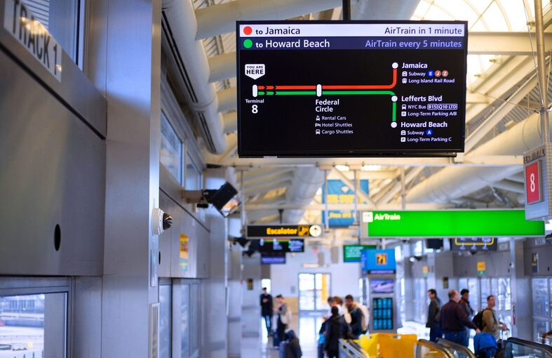
Окончательный редизайн, заказанный агентством, отвечающим за AirTrain
В редких случаях непрошенные редизайны превращаются в запрошенные. В 2018 году Адам Фишер-Кокс опубликовал проект редизайна цифрового табло системы AirTrain в Международном аэропорту имени Джона Кеннеди. Агентство, курирующее AirTrain, увидело этот редизайн и наняло Фишера-Кокса для его реализации.
Старая вывеска AirTrain
в аэропорту Кеннеди
Начало редизайна, копирование
непосредственно с существующей
вывески
Окончательный редизайн, заказанный агентством, отвечающим за AirTrain
С другой стороны, к непрошенным редизайнам часто относятся свысока. В эссе 2013 года под названием «Держите свой непрошенный редизайн при себе» Эрик Карьялуото утверждал, что без признания ограничений и стимулов, которыми руководствовался первоначальный дизайн, редизайн будет «пустым звуком». Те, кто работают над непрошенными редизайнами, «должны понимать, что лучше не тратить свое время на это». В интернете в дизайнерских блогах можно найти бесчисленное множество других ругательств в адрес непрошенного редизайна.
В 2011 году редизайн газеты The New York Times, выполненный Энди Ратледжем по заказу, привлек внимание экспертов в области дизайна в бесчисленных сообщениях в блогах и твитах. Но хотя они и не соглашались с выводами Ратледжа, многие защищали его подход. «Иногда нам нужно сходить с ума и разрабатывать то, что не может работать в чистом виде», — написал Стейн Дебрувер, потому что «полное переосмысление может быть тем, что нам нужно, чтобы двигаться вперед». Даже Хой Винь, предыдущий директор по дизайну Times, поддержал эту практику: «Непрошенные редизайны — это потрясающе, весело и полезно, и я надеюсь, что дизайнеры никогда не перестанут их делать».
Подход Шаньчжай к копированию — учиться, изобретать, комментировать, заявлять о себе — как нельзя лучше подходит для Запада и Китая.
VI
Копирование может быть поучительным, сложным, коварным или революционным. Для меня копирование — это развлечение.
Когда я был маленьким, мне нравилось копировать. Мама покупала мне кальку, и я копировал героев комиксов линия за линией. Отрывая бумагу от оригинала, я испытывал бурный восторг. Я нарисовал это! Своей рукой! Конечно, это была копия, но как только я подписывал свое имя в углу, это была моя копия.
В наши дни автоматическая защита от копирования есть практически на всем. У вас нет возможности легко пиратить контент Netflix, копировать книги Kindle или скачать торрент Adobe Creative Cloud. Но с дизайном все иначе. Чтобы скопировать дизайн, вам понадобится только калька.
Более того, вам даже не придется рисовать. Достаньте телефон, сделайте снимок и сохраните его на своей доске Pinterest. Вы можете воспользоваться цветовым редактором, чтобы подобрать точный оттенок к дизайну, использовать физический или цифровой графический редактор, чтобы получить идеальные размеры в пикселях, и использовать WhatTheFont, чтобы узнать шрифты, используемые в дизайне.
Если вы смотрите на веб-сайт, вы можете просто нажать «Просмотреть код страницы» и увидеть все дизайнерские решения в мельчайших подробностях. Именно так я прошел путь от рисования комиксов до работы дизайнером: я копировал дизайн с понравившихся мне сайтов и вставлял их в свой блог на Xanga.
Я копировал, потому что мог.
На своей первой работе дизайнера я копировал без устали. Мы с друзьями создали музыкальный журнал и пытались воссоздать макеты, которые я видел в своих любимых журналах. Wired был постоянным источником вдохновения: я был одержим их типографикой. Когда я узнал, что они используют шрифт Freight Micro Джошуа Дардена, я также перевел наш журнал на него.
Копирование помогло мне развиваться как дизайнеру без необходимости идти в школу дизайна. Для многих людей, которые слишком молоды для дизайнерских программ на уровне колледжа или не имеют средств для посещения таких школ или буткэмпов, копирование выполняет ту же функцию.
А когда такие люди, как я, делают карьеру в дизайне, мы обнаруживаем, что копирование по-прежнему полезно. Я черпаю цвета с маркетинговых сайтов Apple. Я начинаю свои цветовые палитры с примеров Material Design от Google. Я делаю скриншоты и воссоздаю компоненты нового редизайна Facebook.
Я не считаю себя Ван Гогом в дизайне, не дотягиваю до уровня Столлмана или Кармака в подходе к копированию, не обладаю даже одной сотой способностей Стива Джобса к художественному воровству и не могу сравниться с Чарльзом или Рэем Имзом. Но я определенно могу скопировать все их работы. Я могу скопировать их мышление, их процесс и их дизайн.
Я могу сделать дешевые, небольшие точные копии, фанжипин, чтобы продемонстрировать некоторые качества оригинала. Я могу создавать пиксельно-совершенные фужипины, чтобы узнать, как работают оригиналы и их создатели. Или я могу создавать шаньчжай — непрошеные редизайны, комментируя и рифмуя чужие работы. Все эти копии играют важную роль в процессе создания дизайна.
Независимо от того, считаете ли вы копирование полезным или бесполезным, считаете ли вы копии ценной частью дизайнерского сообщества или его бичом, вы используете программное обеспечение, оборудование, веб-сайты и приложения, которые обязаны своим существованием копированию.
Пока существует дизайн, будет существовать и копирование.
Ссылка на оригинальную статью


.jpg) Commander Keen in Invasion of the Vorticons
Commander Keen in Invasion of the Vorticons